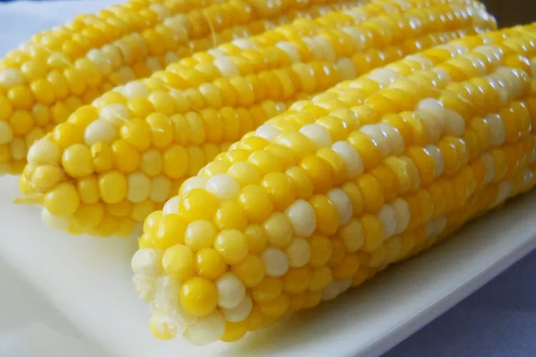

World's Best Potato Salad
Home

Description
This best-ever potato salad is the creamiest, richest potato salad you will ever try.
The secret is in the homemade dressing. I get nothing but raves every time I make this.
Ingredients
- 6 medium potatoes
- ½ cup white sugar
- 2 large eggs, beaten
- 1 teaspoon cornstarch
- salt to taste
- 1 (5 ounce) can evaporated milk
- ½ cup vinegar
- 1 teaspoon prepared yellow mustard
- ¼ cup butter
- 1 cup mayonnaise
- 6 large hard-cooked eggs, diced
- 1 small onion, finely chopped
- 1 cup celery, chopped
- 1 teaspoon salt
Steps
- Gather all ingredients. Preheat oven to 450 degrees F (230 degrees C), and lightly grease a pizza pan.
- Place warm water in a bowl; add yeast and sugar. Mix and let stand until creamy, about 10 minutes.
- Add flour, oil, and salt to the yeast mixture; beat until smooth. You can do this by hand or use a stand mixer fitted with a dough hook to make it easier.
- Let rest for 5 minutes.
- Turn dough out onto a lightly floured surface and pat or roll into a 12-inch circle.
- Transfer to the prepared pizza pan.
- Spread crust with sauce and toppings of your choice.
- Bake in the preheated oven until golden brown, 15 to 20 minutes. Remove from the oven and let cool for 5 minutes before serving.